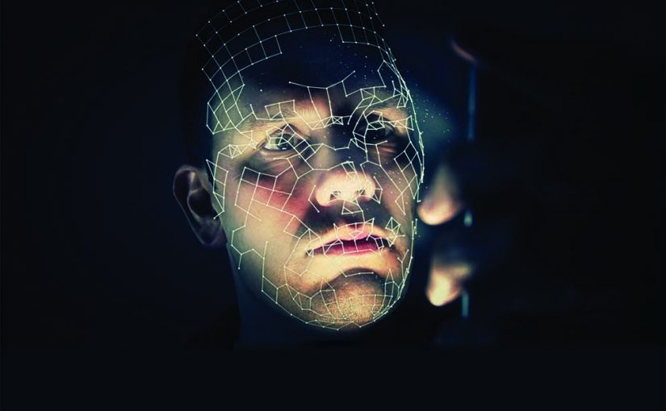

Understanding Deepfakes
Deepfakes are synthetic media created using AI techniques to impersonate real people convincingly. They rely on sophisticated neural networks to generate images, videos, or audio clips that appear authentic. The term "deepfake" comes from "deep learning," the AI technique used to produce these fakes, and "fake," indicating their deceptive nature.
While some deepfakes serve harmless purposes like entertainment, others present serious risks, including misinformation, identity theft, and defamation. As technology improves, distinguishing real from fake content has become increasingly difficult, making detection critical.
How Deepfakes Are Created
Deepfakes typically use Generative Adversarial Networks (GANs). GANs consist of two competing neural networks:
- Generator: Produces synthetic content, attempting to imitate real data.
- Discriminator: Evaluates the generated content against real data, guiding the generator to improve.
This iterative process continues until the generator produces content the discriminator cannot reliably distinguish from reality. Other approaches include autoencoders, which compress and reconstruct data, and neural rendering, which allows realistic face swaps and expression manipulations.
Modern deepfakes can manipulate subtle facial features, lip movements, and even speech, making them harder to detect without advanced analysis.
Applications and Risks

Deepfakes have numerous applications, some beneficial and others potentially harmful:
- Entertainment: Digital characters and special effects in films and video games.
- Education: Simulating scenarios for training purposes, such as medical procedures or emergency drills.
- Accessibility: Enhancing speech or creating virtual avatars for individuals with disabilities.
However, the misuse of deepfakes can have serious consequences:
- Political Disinformation: Fabricated speeches or videos of politicians can mislead voters and manipulate public opinion.
- Fraud and Identity Theft: Criminals can impersonate individuals to gain financial or personal advantage.
- Cyberbullying and Harassment: Manipulated media can damage reputations, relationships, and mental health.
These risks highlight the urgent need for reliable detection technologies and public awareness.
Deepfake Detection Techniques
Detecting deepfakes involves analyzing content for anomalies or artifacts that reveal synthetic generation. Detection methods have evolved alongside deepfake technologies, employing both manual and AI-driven approaches.
1. Visual Artifacts Analysis
Early deepfakes often exhibit visual imperfections such as irregular blinking patterns, unnatural facial expressions, or inconsistencies in lighting and shadows. Observing these anomalies can help identify manipulated content, although advanced deepfakes are increasingly flawless.
2. Frequency and Pixel-level Analysis
Advanced techniques examine pixel-level irregularities and frequency domain patterns. GAN-generated images often display subtle noise inconsistencies or unnatural textures that differ from real images. Frequency analysis can reveal synthetic artifacts invisible to the human eye.
3. Deep Learning-based Detection
AI-powered models are now the most reliable detection tools. By training neural networks on large datasets of real and fake media, these models can identify subtle patterns and anomalies:
- Convolutional Neural Networks (CNNs): Effective for analyzing spatial patterns in images.
- Recurrent Neural Networks (RNNs) and Transformers: Analyze temporal patterns in videos or audio sequences.
- Multimodal Approaches: Combine visual, auditory, and textual cues to detect inconsistencies across modalities.
4. Blockchain and Provenance Verification
Beyond content analysis, blockchain-based verification records the origin and modifications of media files. By storing cryptographic hashes and metadata, these systems ensure that content authenticity can be validated and traced, helping to prevent manipulation before distribution.
Challenges in Deepfake Detection

Despite advances, deepfake detection faces multiple challenges:
- Rapid Evolution: Deepfake generation techniques evolve faster than detection methods.
- Limited Training Data: High-quality labeled datasets are scarce, reducing model accuracy.
- Generalization Issues: Models trained on specific deepfake types may fail on new variants.
- Adversarial Attacks: Malicious actors can subtly alter content to evade detection algorithms.
Overcoming these challenges requires adaptive detection techniques and continuous research.
Ethical and Legal Considerations
Deepfake detection also raises ethical and legal questions:
- Privacy: Detection systems often analyze personal data, necessitating careful privacy safeguards.
- Censorship vs. Safety: Regulating content without infringing on freedom of expression is complex.
- Liability: Determining responsibility for the creation and misuse of deepfakes can be legally challenging.
Many countries are introducing legislation to penalize malicious deepfake use, particularly for non-consensual content and political misinformation.
Future of Deepfake Detection

The future of deepfake detection is likely to involve a combination of technological, societal, and collaborative strategies:
- Real-time detection: Systems flag deepfakes during streaming or uploads to social media and news platforms.
- Multimodal detection: Combining visual, auditory, and textual analyses for robust identification.
- Public Awareness: Educating the public to recognize and critically assess suspicious content.
- Global Collaboration: Sharing datasets, detection models, and response frameworks across organizations and governments.
Continued research and cooperation will be crucial for maintaining trust in digital media and combating malicious manipulation.
Conclusion
Deepfakes represent both technological innovation and societal risk. Effective detection requires a combination of AI algorithms, forensic techniques, ethical governance, and public literacy. As the technology continues to evolve, maintaining media authenticity and trust will depend on collaboration between researchers, policymakers, and the public.